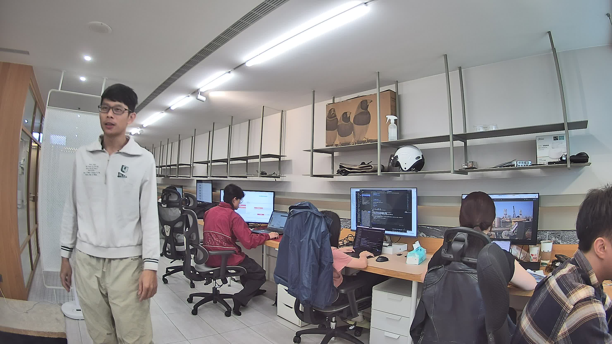

LeWorldModel × 工業安全
JEPA 世界模型 VoE 異常偵測 — Demo 2 實驗報告
基於 LeWM 的 Violation-of-Expectation 機制，從攝影機畫面即時偵測物理異常事件。
0.0056
最終 Prediction Loss
1. 專案概覽
LeWorldModel (LeWM) 是一個基於 JEPA 架構的世界模型，約 15M 參數，可在單 GPU 數小時內訓練。本專案將 LeWM 的 Violation-of-Expectation (VoE) 機制應用於工業安全場景：
- 模型學習場景的「正常物理規律」
- 當實際觀測偏離預測時，產生 surprise 訊號
- Surprise 超過動態閾值 → 觸發異常警報
差異化價值：傳統 YOLO 只能偵測「訓練過的類別」，LeWM VoE 能偵測任何違反物理預期的事件，包括未知類型的異常。
2. 系統架構
PTZ 攝影機 (RTSP)
│
├── YOLO v11 ──→ 物件偵測（bbox, class）
│
└── LeWM Pipeline:
│
├── ViT-Tiny Encoder ──→ z_t (192-dim embedding)
│ │
│ ▼
│ Transformer Predictor (AdaLN-zero)
│ │
│ ▼ ẑ_{t+1} (predicted next embedding)
│
├── Surprise = MSE(ẑ_{t+1}, z_{t+1})
│
└── if Surprise > θ → ⚠️ 異常警報
核心元件
| 元件 | 規格 | 用途 |
|---|
| Encoder | ViT-Tiny (5M params) | 像素 → 192-dim latent embedding |
| Predictor | Transformer 2-layer (3.7M params) | 預測下一步 embedding |
| SIGReg | 1024 projections, 17 knots | 防止表徵崩塌 |
| Action Encoder | 1D Conv + MLP | 動作條件編碼 |
3. 真實攝影機整合
攝影機資訊
| 項目 | 規格 |
|---|
| 品牌 | Milesight |
| 協定 | ONVIF + RTSP |
| 主串流 | 2960 × 1664 @ 25fps |
| 副串流 | 用於 VoE 推論（5fps, 縮放至 64×64） |
| PTZ | ✅ 支援（未來 Demo 4 使用） |
攝影機即時畫面

（攝影機截圖未附，請放置 camera_snapshot.jpg）
辦公室場景 — Milesight 攝影機透過 ONVIF/RTSP 即時拉流
4. 訓練結果
4.1 訓練版本演進
| 版本 | 資料 | Epochs | pred_loss | 設備 | 備註 |
|---|
| v1 | 合成 500ep | 30 | 0.080 | DGX GB10 | 基線 |
| v2 | 合成 2000ep | 50 | 0.032 | DGX GB10 | 更多資料 |
| v3 | 合成 + augmentation | 50 | 0.016 | DGX GB10 | 顏色增強 |
| camera_v2 | 真實攝影機 50ep | 30 | 0.0056 | Mac M3 | 最佳 |
4.2 Prediction Loss 收斂曲線
pred_loss 越低 = 模型對場景的物理動態理解越好
合成資料 v3（含 color augmentation）
Epoch 11020304050
真實攝影機 camera_v2
Epoch 151015202530
5. VoE 異常偵測評估
5.1 合成資料逐幀評估（v3 模型）
| 異常類型 | Peak Surprise | 比正常 | 偵測率 | 判定 |
|---|
| 消失（物體從畫面消失） |
0.1422 |
22.4× |
94% |
✅ 有效 |
| 瞬移（物體突然換位） |
0.0652 |
10.3× |
68% |
✅ 有效 |
| 顏色變化（僅外觀改變） |
1.9411 |
305× |
100% |
⚠️ 過敏 |
正常基線 surprise: 0.0063 ± 0.0088，動態閾值 (mean + 2σ): 0.024
5.2 版本間 VoE 能力演進
| 指標 | v1 | v2 | v3 (augmentation) |
|---|
| 消失偵測 |
2.0× |
5.4× |
22.4× |
| 瞬移偵測 |
1.1× |
1.3× |
10.3× |
| 顏色假陽性 |
— |
10669× |
305× (↓35倍) |
Color augmentation 是關鍵突破：迫使 encoder 學習位置/運動而非像素顏色
5.3 真實攝影機即時 VoE 測試
使用 camera_v2 模型，從 Milesight RTSP 副串流即時拉流 30 秒：
即時 Surprise 時序圖（30 秒 / 152 幀）：
0s← 正常 →← 人員移動 →30s
正常
異常（超過動態閾值）
6. 硬體與部署
🖥️ DGX 工作站
| GPU | NVIDIA GB10 (128.5 GB) |
| CPU | ARM Cortex-X925 × 20 |
| RAM | 119 GB |
| CUDA | 13.0 |
| 用途 | 訓練 + 推論 |
💻 Mac M3（開發機）
| GPU | Apple M3 (MPS) |
| 訓練速度 | ~74s/epoch |
| 推論速度 | 即時 (<50ms) |
| 用途 | 開發 + 訓練 + 推論 |
7. 開發時間線
10:00
深度研究報告事實查證 — 9 項核心宣稱全部確認
11:00
可行性分析：PTZ+YOLO+LeWM ✅ / Reachy Mini ❌
12:00
5 個 Demo 規劃 + 專案結構建立 + GitHub 推送
13:00
DGX GB10 環境設置完成（PyTorch 2.11 + CUDA 13.0）
14:10
Demo 2 pipeline 驗證 + v1 訓練完成（消失偵測 2.0×）
15:00
v2 訓練 + 逐幀 VoE 評估（消失 5.4×, 瞬移 1.3×）
15:45
v3 color augmentation — 瞬移偵測從 1.3× 躍升至 10.3×
17:00
Milesight 攝影機 ONVIF 連線 + RTSP 拉流成功
17:30
5 分鐘真實影像錄製（1500 幀 / 50 episodes）
17:50
真實攝影機 M3 訓練完成（pred_loss 0.0056）
18:00
即時 RTSP VoE 測試通過 — 全流程端到端驗證
8. 程式碼結構
demos/demo2-voe-anomaly/
├── src/
│ ├── generate_synthetic_data.py # 合成移動方塊資料產生器
│ ├── train_voe.py # 訓練 + VoE 測試（含 color augmentation）
│ ├── eval_voe.py # 逐幀 VoE 評估
│ ├── test_surprise.py # Pipeline 驗證
│ ├── test_camera_voe.py # 真實攝影機即時 VoE（無 GUI）
│ ├── live_demo.py # 即時展示（GUI / 合成 / webcam / RTSP）
│ └── record_camera.py # RTSP → HDF5 錄製
├── checkpoints/
│ ├── demo2_v2/ # 合成資料無 augmentation
│ ├── demo2_v3/ # 合成資料 + augmentation
│ └── camera_v2/ # 真實攝影機（最佳）
└── data/
├── synthetic_train.h5 # 500 episodes
├── synthetic_train_large.h5 # 2000 episodes
└── camera_train.h5 # 真實攝影機 50 episodes
9. 後續規劃
🎯 Demo 1: 軌跡預測預警
在人員進入危險區域之前發出預警，預測 2-5 秒後的位置。
下一階段
📷 Demo 4: PTZ 自主巡視
攝影機根據 surprise 訊號自主決定巡視方向，最大化安全覆蓋率。
規劃中